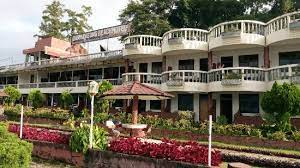
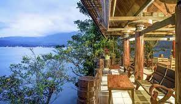
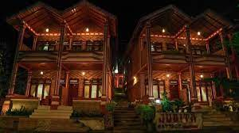

1. Patra Comfort Parapat
Patra Comfort Parapat adalah pilihan terbaik bagi wisatawan yang mengunjungi Parapat, menawarkan banyak fasilitas berguna yang dirancang untuk menyempurnakan pengalaman menginap Anda. Wi-fi gratis ditawarkan untuk para tamu, dan kamar di Patra Comfort Parapat memiliki penyejuk udara dan meja. Selama Anda menginap, gunakan fasilitas yang ditawarkan, seperti layanan kamar, layanan concierge, dan teras terbuka. Tamu Patra Comfort Parapat juga dapat menikmati kolam renang dan restoran di properti. Bagi wisatawan yang datang dengan mobil, tersedia parkir gratis. Jika Anda suka makanan cina, Patra Comfort Parapat terletak dekat LaToSu Cafe & Resto. Nikmati masa menginap Anda di Parapat!.

2. Darma Agung Beach Hotel
Darma Agung Beach Hotel, mewarkan berbagai fasilitas dan kenyamanan. Kamar tamu menawarkan fasilitas seperti kulkas, dan tamu dapat terhubung dengan internet menggunakan akses internet yang ditawarkan oleh hotel. Darma Agung Beach Hotel menawarkan layanan kamar dan layanan concierge, sehingga pengalaman menginap Anda lebih menyenangkan. Properti ini juga menawarkan restoran di tempat. Jika Anda suka makanan Asia, Darma Agung Beach Hotel terletak dekat Restoran Istana Minang, LaToSu Cafe & Resto, dan WinTie Coffee Shop. Staf di Darma Agung Beach Hotel berharap dapat melayani Anda selama kunjungan Anda mendatang.
3. Tabo Cottages Tuktuk Lake Toba
Tabo Cottages adalah hotel yang natural dengan pekarangan hijau yang luas dan kamar sebahagian dari bahan daur ulang dari rumah tradisional. Terdapat pondok untuk santai dan menikmati pemandangan danau dan gunung, Restoran dan bakery jerman . Makanan spesial adalah prasmanan dengan khas lokal dan barat. Kopi adalah salah satu produk yang sangat kami banggakan karena kami memanggang biji kopi lokal sendiri, maka kopi di Tabo sangat segar dan harum. Sering juga kami adakan aksi linkungan bersama tamu2 dan coba memperbaiki linkungan dan fasilitas seperti jalur treking secara relawan. Tabo Cottages Tuktuk Lake Toba, jadikan liburan Anda tak terlupakan.
4. Toledo Inn
Toledo Inn memiliki taman, teras, restoran, dan bar di Tuk Tuk. Wi-Fi gratis dan layanan kamar juga disediakan. Setiap kamar dilengkapi dengan lemari pakaian dan kamar mandi pribadi dengan shower, meja dan TV layar datar, sementara kamar-kamar tertentu memiliki balkon dan yang lainnya juga menampilkan pemandangan pegunungan. Pilihan sarapan Asia dan halal tersedia setiap hari di akomodasi.
5. OYO 2379 Hotel Sibigo
Lakukan perjalanan terbaik Anda ke Samosir dengan standar Sanitized Stays yang dijanjikan, dan nikmati Wi-Fi gratis di semua kamar. Berlokasi strategis di Samosir bagian Barat Samosir, properti ini menempatkan Anda dekat dengan atraksi dan pilihan tempat makan yang menarik. Sebagai bonus tambahan, restoran disediakan di lokasi untuk melayani kebutuhan Anda dengan nyaman. Bersama Hotel Sibigo, liburan menjadi menyenangkan.
6. Juma Cottage
Juma Cottage adalah sebuah guest house ramah lingkungan yang terletak di Tuk Tuk, dan memiliki taman. Terdapat restoran di tempat dan parkir pribadi gratis. Di guest house, unit-unitnya dilengkapi dengan balkon. Unit-unitnya dilengkapi dengan kamar mandi pribadi dan teko, sementara beberapa kamar dilengkapi dengan teras dan yang lainnya juga memiliki pemandangan pegunungan.Nikmati liburang yang berkesan dengan keluarga dan orang tercinta bersama Juma Cottage.

7. Hotel Carolina
Hotel Carolina adalah pilihan terbaik bagi wisatawan yang mengunjungi Pulau Samosir, menawarkan lingkungan yang menawan dengan banyak fasilitas bermanfaat yang dirancang untuk menyempurnakan pengalaman menginap Anda. Hotel Carolina menawarkan para tamu serangkaian perlengkapan kamar termasuk minibar dan kulkas, dan terhubung dengan internet dapat dilakukan karena akses internet gratis tersedia. Hotel menawarkan penukaran valas, teras terbuka, dan kursi pantai, untuk membuat kunjungan Anda semakin menyenangkan. Properti ini juga memiliki restoran di tempat. Para tamu yang datang dengan kendaraan memiliki akses ke parkir gratis. Pada saat di Pulau Samosir jangan lupa mencicipi ikan dan keripik yang menjadi favorit di Jenny's Restaurant. Nikmati masa tinggal Anda di Pulau Samosir.
8. My Nasha
Nasha tigaras simalungun saya terletak di daerah tigaras-simalungun hotel ini terletak 5 menit dari pelabuhan tigaras. Terdapat beberapa tempat menarik di sekitarnya, seperti bukit indah simarjarunjung yang berjarak sekitar 1,38 km. nasha tigaras saya adalah tempat menginap sempurna yang menyediakan fasilitas layak serta layanan hebat. bersenang-senanglah dengan berbagai fasilitas hiburan untuk Anda dan seluruh keluarga di nasha tigaras saya, akomodasi luar biasa untuk liburan keluarga Anda Meja depan 24 jam tersedia untuk melayani Anda, mulai dari check-in hingga check-out, atau bantuan apa pun yang Anda perlukan. jika Anda menginginkan lebih, jangan ragu untuk bertanya di meja depan. kami selalu siap mengakomodasi Anda. nashs tigaras saya adalah pilihan ideal bagi Anda yang mencari kenyamanan.
